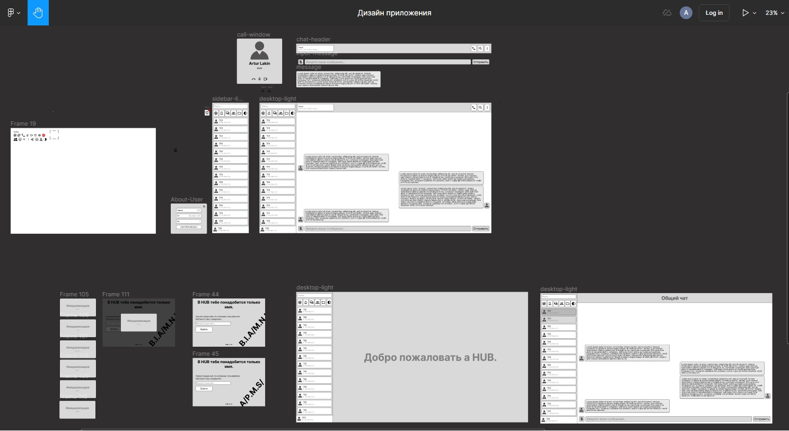

В HUB тебе понадобится только имя
Простота и удобство в использовании только имени
- Быстрый доступ: Пользователи могут быстро войти в чат, не затрачивая время на заполнение сложных форм регистрации.
- Меньше препятствий для новых пользователей: Нет необходимости запоминать пароли или проходить сложные процедуры верификации.
Повышение активности пользователей
- Легкий вход способствует тому, что пользователи будут чаще заходить в чат, что повышает общую активность и вовлеченность.
- Меньше барьеров для участия: Поскольку вход максимально упрощен, больше людей могут быстро присоединиться к обсуждениям.
Меньше административных затрат
- Упрощенное управление: Администраторам не нужно заниматься восстановлением паролей или управлением сложными учетными записями.
- Снижение затрат на поддержку: Меньше обращений в поддержку по вопросам авторизации и паролей.
Гибкость использования
- Легкость для временных пользователей: Такой чат удобен для разовых обсуждений или временных проектов, где нет необходимости в долговременных учетных записях.
- Простота для неформальных групп: Упрощенная авторизация идеально подходит для групп, где важен быстрый обмен информацией без необходимости постоянного контроля за пользователями.
Повышение безопасности за счет упрощения
- Меньше данных для защиты: Отсутствие сложных личных данных или паролей снижает риск утечки информации.
- Фокус на содержании: Администраторы могут больше внимания уделять содержанию и модерации чата, чем управлению учетными записями.

Преимущества децентрализованной сети без единого сервера
Повышенная устойчивость и отказоустойчивость
- Отсутствие единой точки отказа: Сеть продолжает функционировать, даже если отдельные узлы выходят из строя.
- Более высокая надежность: Децентрализованная архитектура обеспечивает стабильную работу сети в случае атак или технических неполадок.
Повышенная безопасность и конфиденциальность
- Сложность для атак: Распределённая структура делает сложнее атаки на сеть, так как нет центральной цели.
- Конфиденциальность данных: Пользователи имеют больший контроль над своими данными, которые не хранятся на центральном сервере.
Гибкость и масштабируемость
- Легкость масштабирования: Сеть может расти и развиваться без необходимости модернизации центральной инфраструктуры.
- Адаптивность: Децентрализованные сети легче адаптируются к изменениям в использовании и нагрузке.
Улучшенное управление и контроль
- Автономия участников: Каждый участник сети имеет больше контроля и независимости, что способствует более справедливому распределению ресурсов.
- Отсутствие централизованного контроля: Снижение риска злоупотреблений со стороны централизованных администраторов.
Прозрачность и доверие
- Прозрачность транзакций: Децентрализованные сети, такие как блокчейн, обеспечивают прозрачность и проверяемость всех транзакций.
- Повышение доверия: Отсутствие центрального контролера способствует повышению доверия среди участников сети.
Почему HUB?
Безопасность и конфиденциальность
- Шифрование сообщений для защиты данных пользователей.
- Анонимность без необходимости регистрации и ввода личных данных.
Удобство и простота использования
- Интуитивно понятный интерфейс для легкого общения.
- Быстрая авторизация: достаточно только имени для входа.
Высокая производительность
- Быстрая доставка сообщений даже при слабом интернете.
- Низкое потребление ресурсов устройства.
Многофункциональность
- Поддержка групповых чатов и каналов.
- Встроенные инструменты для работы и развлечений (например, файлообмен, игры).
Этапы создания HUB
1. Дизайн приложения на Figma
2. Первый набросок PySide6

3. Подключен минимальный функционал

4. Реализация GUI по дизайну из Figma

5. Добавлена темная тема